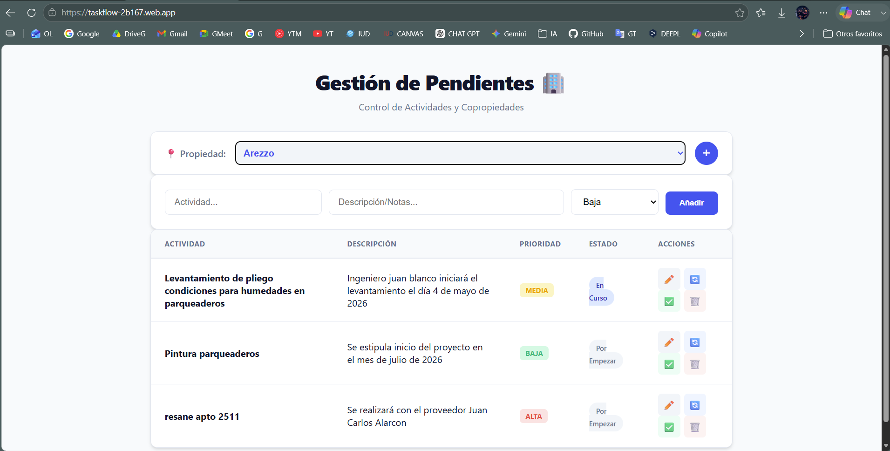

Tracer Bullet
Recorrido cronologico del primer corte vertical que permitio validar el MVP.
Abrir secciónDocumentacion academica
Software Journey Arquitectonico basado en evidencia real del repositorio y en los conceptos de John Ousterhout.

Aplicación web para la gestion de actividades en copropiedades, desarrollada con Vanilla JavaScript, Firebase Firestore y Firebase Hosting. Esta documentacion narra como el MVP fue validado rapidamente y como la complejidad arquitectonica comenzo a emerger.
El analisis conserva los conceptos de Deep Modules, Shallow Modules, Information Hiding, Information Leakage y Change Amplification, sin inventar funcionalidades ni componentes no demostrados por el repositorio.
Recorrido cronologico del primer corte vertical que permitio validar el MVP.
Abrir secciónEvaluacion de modulos profundos, superficiales, ocultamiento y fuga de informacion.
Abrir secciónLecciones aprendidas y prioridades arquitectonicas para una siguiente iteracion.
Abrir sección